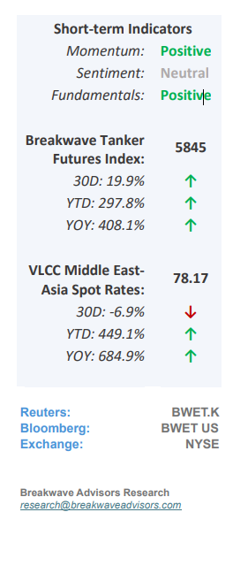
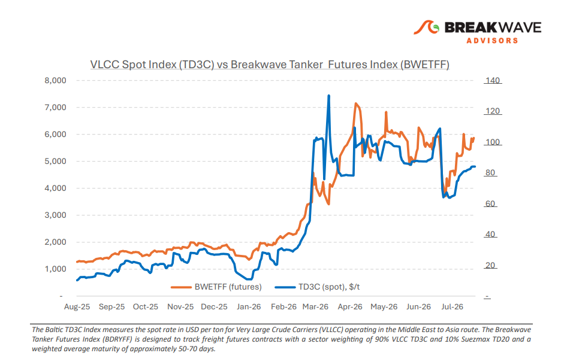
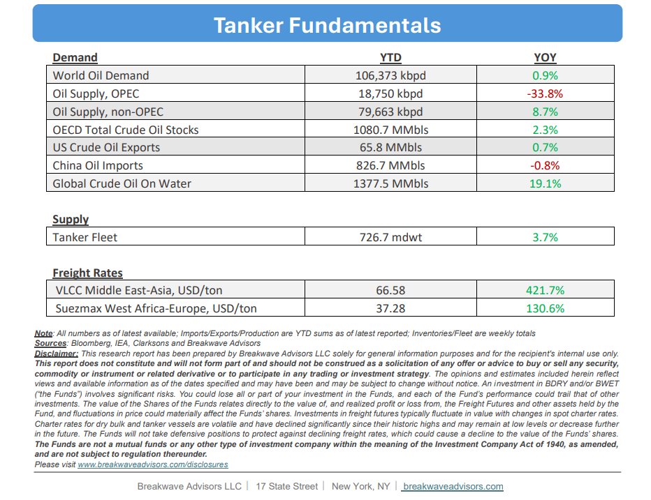

•Geopolitical Risk Premium Broadens– As July comes to an end, the VLCC market hasreverted to pricing geopolitical riskas the dominant driver of freight formation, reversing the gradual stabilization that followed the June ceasefire. The latest escalation hasexpandedmarket attention beyond the Strait of Hormuz toinclude the Red Seafollowing renewed Houthi attacks, with freight increasingly reflecting operational risk across the Middle East's two principal crude export corridors rather than underlying supply-demand fundamentals. This shift comes despite continued diplomatic efforts. Oman remains the principal intermediary between Washington and Tehran, with recent reports indicating renewed negotiations and a temporary pause in direct military action. While these developments may help contain further escalation, they have yet to restore confidence in commercial shipping, leaving chartering sentiment primarily driven by security considerations.Commercial tanker traffic continuesthrough both the Strait of Hormuz and the Red Sea, demonstrating that neither corridor has ceased operating. However, voyage exposure, insurance costs and routing flexibility have become increasinglyimportant components of fixture negotiations,reinforcing the geopolitical premium embedded in VLCC freight. For the VLCC market, the key freight dynamic is the potential extension of voyage distances rather than a reduction in crude export volumes.Broader reroutingaround the Cape of Good Hope wouldincrease tonne-mile demandwhile tightening effective vessel supply, supporting freight even if Gulf export programs remain largely unchanged.

•Oil Prices Jump as Hormuz Flows Slow Down– Volatility has returned in the oil markets following the renewed attacks by both US and Iran. Therecent mini glutthat followed the exit of more than 100mb from the Persian Gulf las month seem tohave now finishedand low inventories around the global should me the main driver of oil prices going forward. As such,we expectto see oil prices pushing higher, with Brent once again forecasted to settleabove $100 per barrel. Although volatility around headlines as it relates to potential ceasefire agreements should play a major role in price direction, fundamentals should begin to drive prices more that before as there is the safety margin is now much smaller given the major drawdown in inventories over the past several months.
•Our Long-term View– The tanker market has been recovering from a long period of staggered rates as the growth in new vessel supply shrunk while oil demand remained elevated in line with the global economy. The recent rapid increase in freight rates has led to significant new vessel ordering, with the orderbook now standing at above average levels, and although in the near term such a supply/demand misbalance is small, we expect a meaningful negative balance to develop longer term leading to a potential downcycle.


Subscribe: